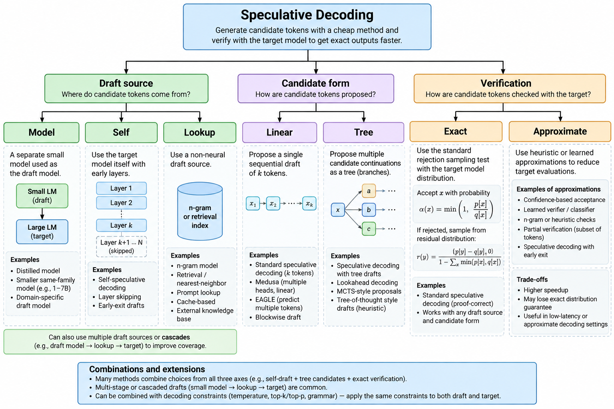
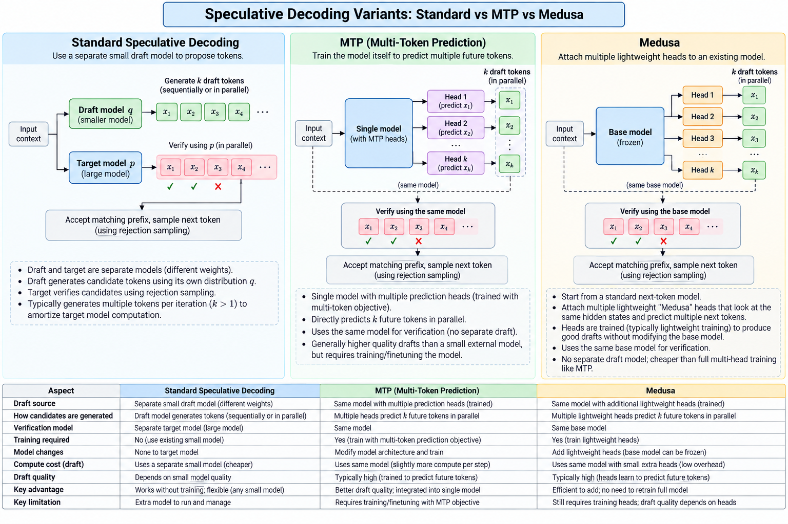

Variations of speculative decoding
Module thesis: Lecture 15/16 showed the loop is correct for any drafter — a bad one costs speed, never accuracy. That freedom produced a large family of variants. They look unrelated until you notice they are choices on three independent axes: where the draft comes from, what shape the candidates take, and how verification is done. Pick one option per axis and you have named a system.
Prerequisite: Speculative decoding
1. The map

Image credit: ChatGPT.
The axes are independent. An n-gram drafter with tree candidates and exact verification is a valid system; so is a Medusa head with linear candidates and threshold acceptance.
A fourth knob sits on top of all three: how much to speculate — the draft length γ. It is not a branch of the tree because it applies to every combination.
2. Axis 1 — where the draft comes from
Separate draft model
The canonical setup, and the one Lecture 15/16 described.
Draft model q ──► x₁ x₂ … xγ ──► Target p verifies all γ in one pass
Needs: a second checkpoint, 1–2 GB VRAM, an exactly matching tokenizer.
Costs: re-derives context from scratch — it has no access to the target's internal state.
Self-speculation
The target drafts for itself by running cheaply.
Target model
├── shallow execution (layers 1…12) → draft
└── full execution (layers 1…64) → verify
Variants: early exit, skipped layers, a subset of layers, shared KV.
Wins: no second model, no extra weights, draft and target share parameters.
Loses: a truncated model is a different model, so acceptance is mediocre.
Lookup: prompt and n-gram
No neural drafter at all. Predict from text already present.
context: for i in range(...):
...
lookup → print(...)
- Prompt lookup — match the last few tokens against earlier context, copy what followed.
- N-gram — a table built from observed text:
"import numpy as" → "np".
Cost is negligible. Acceptance depends entirely on repetition in the workload — strong on code and structured output, near zero on novel prose.
Heads attached to the target
Small trained modules reading the target's hidden state hₜ.
┌─ head 1 → t+1
Transformer ───┼─ head 2 → t+2
├─ head 3 → t+3
└─ head 4 → t+4

Image credit: ChatGPT.
Both attach extra prediction heads. That shared surface is why they get confused, and the head count is not the distinction.
| MTP | Medusa | |
|---|---|---|
| Core idea | Future-token prediction as a training objective | Extra decoding heads bolted onto a finished model |
| When acquired | During pre-training, with the base model | After the fact; base typically frozen |
| Purpose | Teach the model to see further ahead | Turn an existing model into a speculative decoder |
| Separate draft model? | No | No |
| Works with tree verification? | Yes | Yes |
They are not competitors. Both are mechanisms for producing future-token predictions; those predictions then feed the same draft→verify loop. A modern system can use MTP-trained components inside a Medusa-style arrangement.
How the heads are trained
The training data already contains the targets — no extra labelling is needed.
sequence: … A B C D E F G …
↑
t
original LM head → D (t+1)
extra head 1 → E (t+2)
extra head 2 → F (t+3)
extra head 3 → G (t+4)
Head k is trained against the token k positions ahead, with a cross-entropy loss per head, weighted:
L = L_head1(D) + λ₂·L_head2(E) + λ₃·L_head3(F) + λ₄·L_head4(G)
The base model is usually frozen. Only the heads train, which is why this is cheap to add to a checkpoint someone else shipped.
The conditioning gap
Here is the structural weakness, and it explains a number you have already seen.
ordinary autoregressive: hₜ → t+1 → t+2 → t+3 each step sees the last
extra head 3: hₜ ──────────────→ t+4 never sees t+2 or t+3
Head 3 must learn P(x₊₄ | hₜ) rather than P(x₊₄ | x≤₊₃). It is predicting four positions out from a representation that knows nothing about the three tokens in between.
Three consequences:
- These heads are not equivalent to running the model k times. They are cheaper precisely because they skip the conditioning.
- Acceptance decays with position — this is the mechanism behind Lecture 15/16's "position 2+ acceptance far below position 1".
- Verification absorbs the whole cost. The weakness shows up as speed, never as quality, which is the freedom the thesis opened with.
A related decay affects single-layer heads reused across positions: they do condition, but on their own unverified output, so error compounds instead of being absent.
Why trees fit heads naturally
Each head emits a full distribution, not one token. Taking only the argmax throws that away.
head 1 → D (also: D' D'')
head 2 → E (also: E')
head 3 → F
Keep the top few per position and the linear draft becomes a tree at no extra drafting cost — the forward pass already computed them. This is why Medusa and EAGLE ship tree verification and simple MTP setups often do not.
EAGLE: predict features, not tokens
target hidden state
↓
small feature predictor
↓
future hidden states
↓
target's own LM head
↓
candidate tokens
Predicting the next hidden state rather than the next token id keeps far more information in play, and the target's own LM head does the final conversion. This produces substantially stronger drafts than token-level heads of similar size.
Block drafters
Propose the whole window in one pass instead of one token at a time, keeping candidates at every position and running a selector to trace a path.
| Autoregressive drafter | Block drafter | |
|---|---|---|
Passes to draft γ |
γ sequential |
1 |
Cost in γ |
linear | flat |
Optimal γ |
early, 3–4 | its trained block size |
Because cost is flat, "stop at γ≈3–4" does not apply — that rule describes autoregressive drafters only.
Anatomy of one — z-lab/Qwen3.8-27B-DFlash2, drafting for Qwen3.8-27B:
| Field | Value |
|---|---|
| Size | 3.85 GB, bf16 |
| Layers | 5, sliding attention, window 2048 |
block_size |
8 → num_speculative_tokens: 7 |
| Selector | rank 256, top-k 16 |
| Target taps | layers [5, 19, 33, 47, 61] of 64 |
is_causal |
False |
Two fields carry the design. is_causal: False is what lets it fill a block rather than extend a sequence. The target taps read the target's hidden state at five depths — the head trick, applied to a whole block.
It must run its trained window. Shorter windows measure slower: the model was fitted to produce 8 positions and produces them whether you ask for 8 or 3.
Cascades
Several drafters in a chain, each filtering for the next.
tiny model → small model → medium model → large target
1B 7B 35B verify
The cheap model proposes, intermediates filter, and the expensive model only verifies survivors. Mostly interesting on heterogeneous hardware.
3. Axis 2 — what shape the candidates take
Linear
One candidate sequence. Everything in Lecture 15/16 assumed this.
Tree
Several alternatives per position, verified together behind an attention mask that stops branches seeing each other.
A
/ | \
B C D
/ \ |
E F G
Raises acceptance — the target need only agree with some branch rather than one specific guess.
Costs positions — more positions per verification pass, which eventually reintroduces the compute pressure speculation was exploiting.
Tree verification is where head-based drafters shine: each head already produces a ranked list, so keeping the top few candidates per position is free.
Parallel / Jacobi
A different mechanism entirely. Rather than extending left to right, guess all positions at once and iterate to a fixed point.
???? ???? ???? ????
A B C D
A E F G
A E H I
Each round refines; the prefix stabilises first. Related to blockwise parallel decoding. Classified here because the draft/verify framing still applies, though the mechanics differ substantially.
4. Axis 3 — how verification is done
Exact
The rejection-sampling rule from Lecture 15/16 §7 — accept with probability min(1, p/q), and on rejection draw from the residual. The emitted distribution is exactly p.
This is the correctness core the lab's stage 0 implements.
Approximate
Deliberately relax exactness for throughput: confidence thresholds, greedy verification schemes, accepting any draft token clearing a probability bar.
The trade is real and usually undisclosed. At temperature 0 these schemes are often still exact, because greedy has one right answer. Above temperature 0 the output distribution shifts toward the draft's preferences.
Check the default before assuming lossless. Lecture 15/16 §5 records an engine flag that ships at the exact setting and silently gives up the guarantee when lowered.
5. The knob on top — how much to speculate
γ applies to every combination of the three axes.
| Strategy | How γ is chosen |
|---|---|
| Fixed | One constant, e.g. γ = 5. What most tutorials show |
| Adaptive | Per step, from a signal: draft confidence, entropy, recent acceptance, target/draft disagreement |
| Learned | A controller decides how much — or whether — to speculate at all |
Adaptive schemes exist because the optimal γ is not constant. Confidence varies within a single generation: boilerplate tolerates a long window, a genuine branch point does not.
A learned controller optimises the right objective:
tokens generated
─────────────────────────
target-model computation
Note that this is not acceptance rate. Lecture 15/16 §6 showed the two diverge — the γ with the longest acceptance length is not the γ with the highest throughput.
6. Choosing
block drafter published for this model? -> usually fastest, if VRAM allows
checkpoint ships an MTP head? -> the zero-acquisition default
output largely copies the input? -> n-gram / prompt lookup
trained EAGLE head available? -> strongest drafts for its size
VRAM plentiful and a sibling exists? -> small draft model
else -> skip speculation
Read top to bottom, stop at the first yes. The order is acquisition cost against expected acceptance, not sophistication — lookup sits third because when it applies it beats trained drafters costing gigabytes.
💬 Your checkpoint ships an MTP head and a block drafter exists for it. You serve 128k-token agentic sessions on a single card. Which do you choose?
Answer
Probably the MTP head, despite the block drafter being faster in tokens/sec. The block drafter's weights come out of the KV pool, and at long context that is the binding constraint — Lecture 15/16 records 3.3 GiB of drafter cutting the KV pool from 309,329 to 168,340 tokens and halving concurrency at full context. A 22% decode gain is a poor trade for halving how many long sessions fit. The answer inverts at short context, where KV pressure is slack and the throughput win is free. This is why the decision list ends at "if VRAM allows" rather than at "fastest".
7. What to measure before choosing
Acceptance is a property of the pair and the workload, so a published number predicts little about your traffic.
- Baseline with speculation off, fixed output length.
- Try lookup first — it costs nothing to evaluate and sets the bar everything else must beat.
- Read acceptance length, not throughput — near 1.0 means pure overhead.
- Measure the KV pool with the drafter loaded and without.
- Re-measure at real concurrency — batch 1 flatters speculation.
- Sweep
γ, knowing which cost model your drafter obeys: linear or flat.
Lab: code/spec_decode/ implements the separate-model and lookup families behind one interface, so the two can be swapped and swept against the same target.
References
- Cai et al., Medusa (2024) — extra decoding heads, tree attention
- Li et al., EAGLE (2024) — feature-level drafting
- Lecture 15/16 — the mechanism, the guarantee, the measurements
- Lecture 9/10 — the memory wall these variants are spending